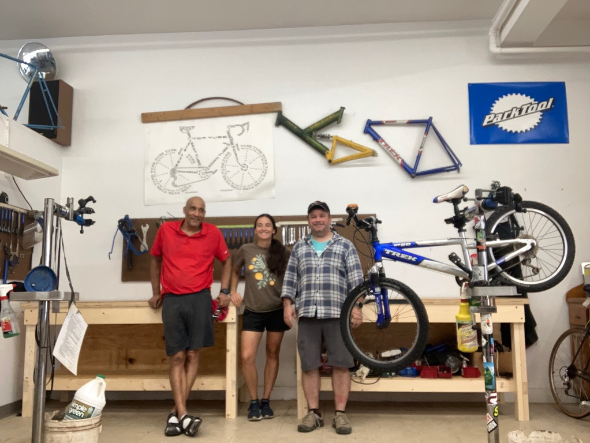
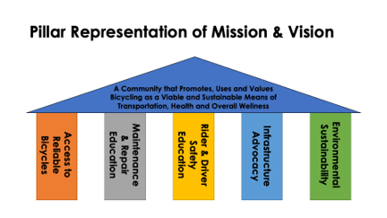

The Dubuque Coop was founded in 2012 by several biking and community
advocates that saw a need for a bicycle cooperative in Dubuque to help people get on bikes.
Our shop is located


The Dubuque Bike Coop’s mission is to help build a community that promotes, uses and values bicycling as a viable and sustainable means of transportation, health and overall wellness. We do this by: